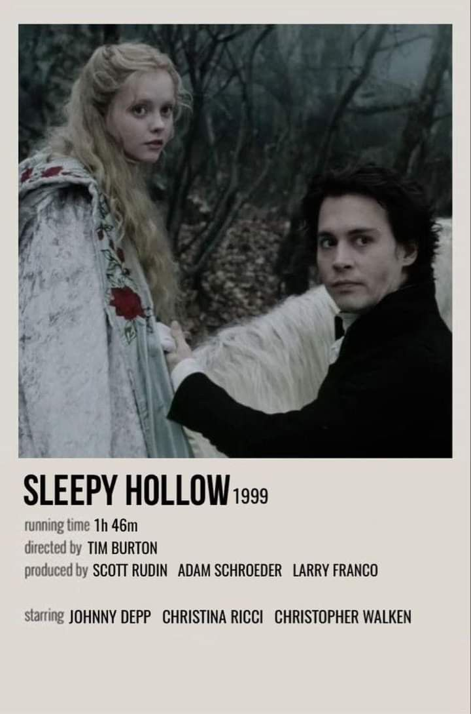

Ichabod
Ichabod Crane (Johnny Depp): Um jovem e excêntrico condestável de Nova York que utiliza métodos científicos e racionais para investigar a série de decapitações.

A Lenda de Sleepy Hollow(1999) é um filme de terror gótico dirigido por Tim Burton e estrelado por Johnny Depp e Christina Ricci. Baseado no conto clássico de Washington Irving, a trama acompanha o investigador Ichabod Crane na busca por um assassino decapitaor na vila de Sleepy Hollow, onde ele também se apaixona pela jovem Katrina Van Tassel.
Em 1799, o detetive nova-iorquino Ichabod Crane é enviado à vila de Sleepy Hollow para investigar uma série de decapitações brutais. Os moradores acreditam que os crimes são cometidos pelo fantasma de um mercenário hessiano sem cabeça, teoria da qual o cético Ichabod duvida até testemunhar o monstro em ação.
Acompanhado por Katrina Van Tassel e pelo jovem orfão Masbath, Ichabod descobre o túmulo do Hessiano e deduz que alguém roubou seu crânio para controlá-lo magicamente. O detetive percebe que os assassinatos não são aleatórios, mas sim parte de uma conspiração para reivindicar a fortuna e as terras da abastada família Van Garrett.
Após suspeitar erroneamente de Baltus e de Katrina, Ichabod descobre a verdadeira vilã: Mary Van Tassel, a madrasta de Katrina. Movida por vingança contra a elite local que arruinou sua infância, Mary invocou o Hessiano, forjou a própria morte e eliminou sistematicamente todas as testemunhas e herdeiros das propriedades.
No confronto final na "árvore dos mortos", Ichabod recupera o crânio e o devolve ao mercenário, quebrando o feitiço. Livre do controle de Mary, o Hessiano a arrasta para o Inferno, encerrando a maldição. Com o mistério resolvido, Ichabod retorna a Nova York acompanhado por Katrina e Masbath.
Ichabod Crane (Johnny Depp): Um jovem e excêntrico condestável de Nova York que utiliza métodos científicos e racionais para investigar a série de decapitações.

Katrina Van Tassel (Christina Ricci): A bela e misteriosa jovem, filha do homem mais rico da vila, que se envolve com Ichabod e guarda segredos sobre o ocultismo.

O Cavaleiro Sem Cabeça / Mercenário Hessiano (Christopher Walken): O espírito vingativo de um mercenário alemão que cavalga à noite em busca de sua cabeça.